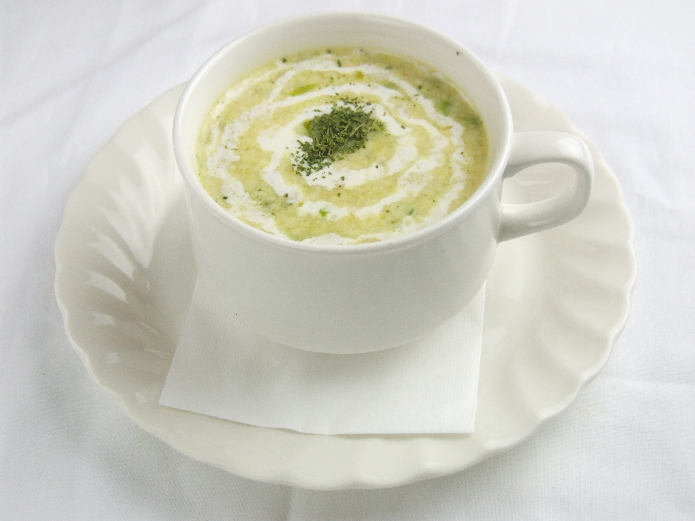

- 
Welcome to Ethnic Food Gita! 🌟
At Ethnic Food Gita, we bring the rich and diverse flavors of India to your table. Our journey began with a passion for authentic Indian along with Nepali cuisine and a desire to share the vibrant culinary traditions of our homeland with the world.
Our Story
Founded by Kandel Tilak, Ethnic Food Gita is a celebration of India’s culinary heritage. With recipes passed down through generations, we strive to offer a true taste of India, using only the freshest ingredients and traditional cooking methods.
Our Mission
Our mission is to provide an unforgettable dining experience that combines the warmth of Indian and Nepalese hospitality with the richness of our cuisine. We believe in creating a welcoming atmosphere where every guest feels like family.
Our Menu
From the spicy curries of the south to the aromatic biryanis of the north, our menu features a wide range of dishes that showcase the best of Indian and Nepali cuisine. Whether you’re a fan of vegetarian delights or crave succulent meats, there’s something for everyone at Ethnic Food Gita.
ID: 23319067 Name: Kandel Tilak